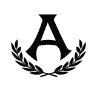
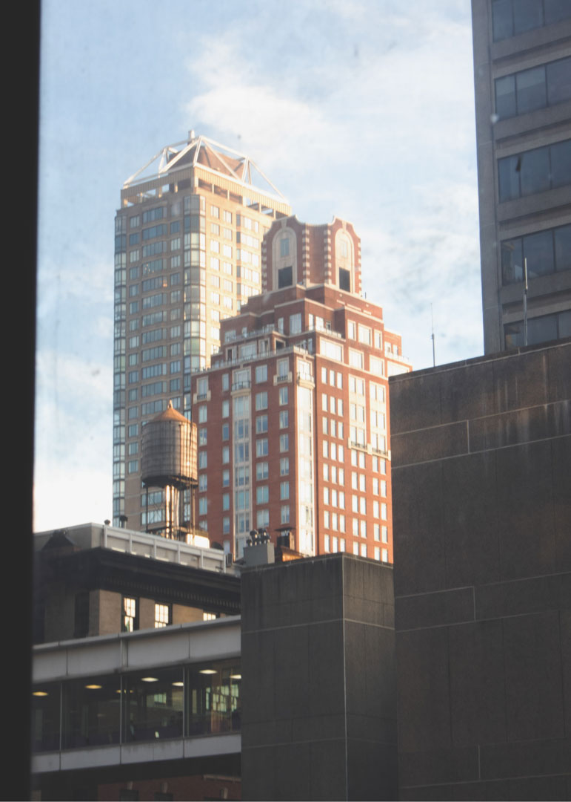
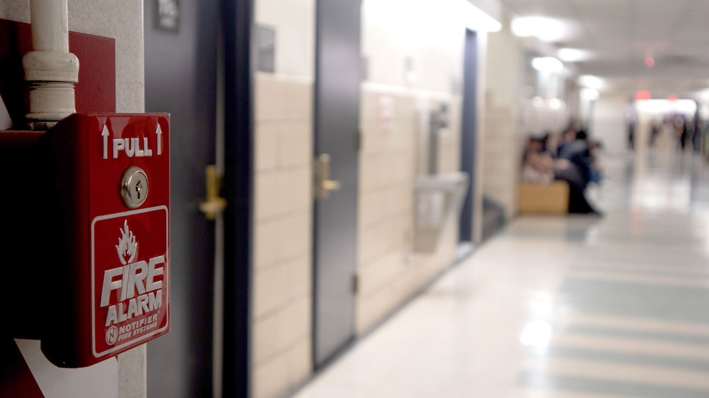
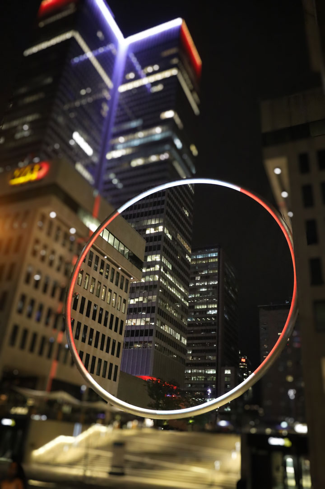
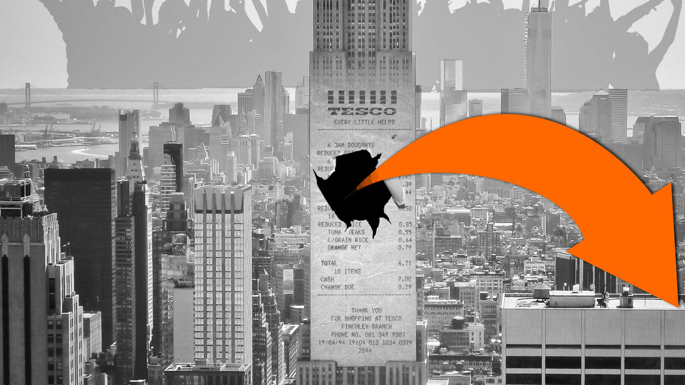
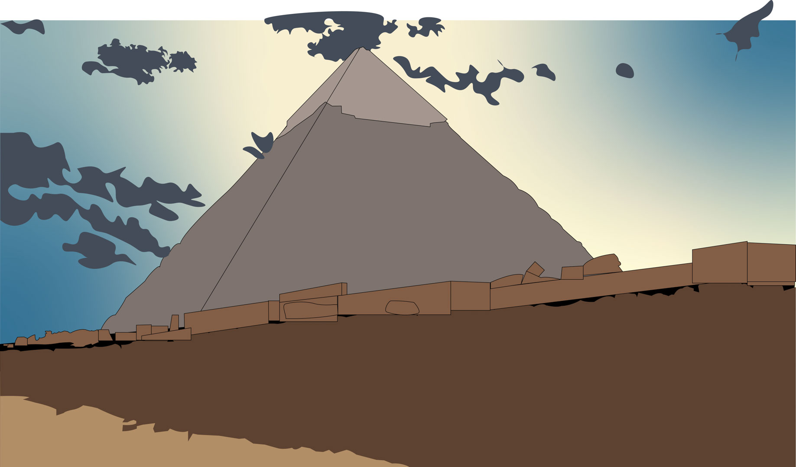
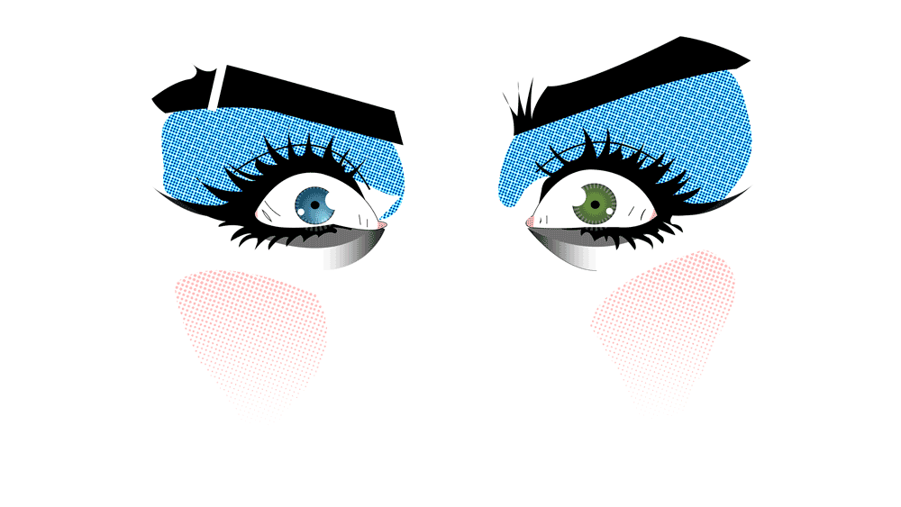

Greetings!
I took a serious interest in the arts when I attended Elementary school, it started out as a passion for drawing. I would routinely sketch buildings and make my own graffiti tags, inspired by my surroundings and interest my artwork reflected my surroundings. Later in High School I began sketching more complex and technical objects, such as human anatomy. My passion led me to seek a degree in Communication Arts Digital Technology in university.
The Field that interest me the most are Website and UI/UX design. Combining my passion in UI/UX with coming up with solutions to create a website that is both functional and aesthetically pleasing is my goal. Another side interest I have is photography, the ability to be able to include elements of photography and videography into my designs is a goal of mine.
My inspiration comes from Music, Print-media, Architecture, Travel, History, Nostalgia growing up in the New York Area and incorporating parts of current culture. Learning through Books, Videos, Magazines, Courses, Demonstrations or anything else that can use to get opportunities to learn.







Email Send Email